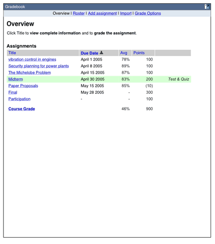
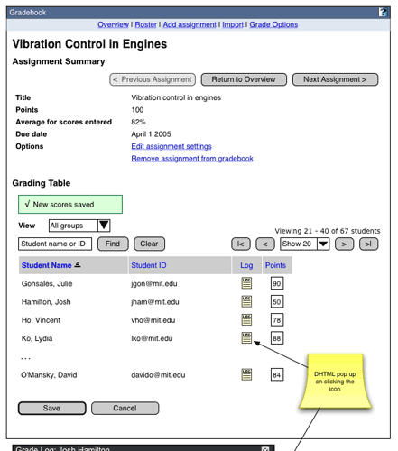
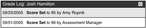
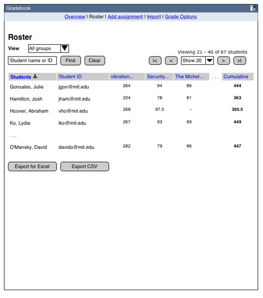
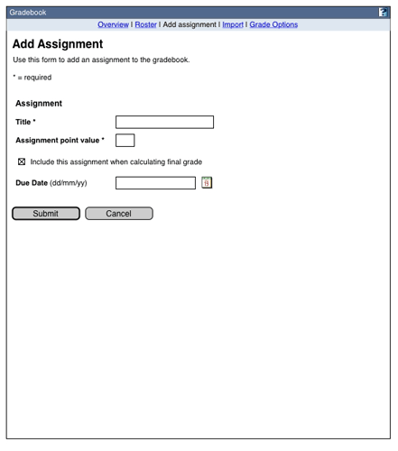
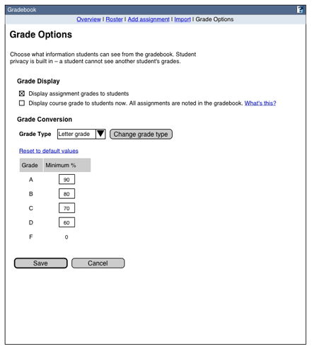
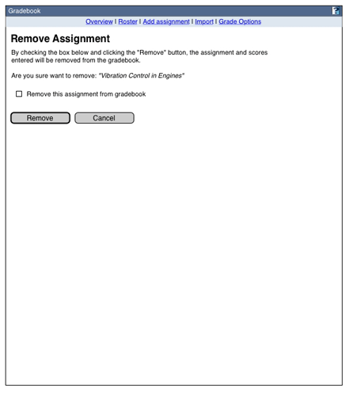
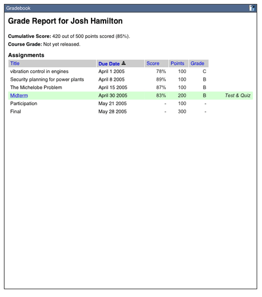

DRAFT
Sakai 2.1 Gradebook Functional Requirements and Specification
Contents
- Introduction
- Summary
- Functional Requirements
- Roles and groups
- Wireframes/Functional Specification
- Functional Roadmap
I. Introduction
The Sakai gradebook is a collaborative effort to produce a simple, open source tool for calculating, storing and disseminating grade information online. Design and development is being led by MIT and UC Berkeley with key support from the other Sakai core institutions. Plans for further development of the Sakai gradebook are outlined in Section VII.
II. Summary
A. The Sakai 2.1 gradebook will enable instructors to:
- Autocalculate course grades
- Establish and edit a mapping of the course letter grade to a 100 percent scale
- Add, view, edit and release to students the class assignments/assessments (straight point values only)
- Manually enter, view, edit and release to students their scores and grades
- Automatically import assignments and scores from Samigo
- Export scores and grades in excel, csv format
- Filter student lists by section
- Keep log of grading activity for each student's work
B. The Sakai 2.0 gradebook will enable each student to:
- View his/her own scores and grades, if they have been released by the instructor(s).
III. Functional Requirements
All actions described in sections I-VIII are available only to the Instructor role. The sections correspond to all nine available views in the 2.0 gradebook.
A. Gradebook Menu
- Link to inactive views. The Overview is the entry page.
B. Overview
- Sort display table by assignment name, due date, class average and total points possible
- View class average scores for each assignment
- Access the assignment details views
- Access the course grade view
- View total possible points for an assignment and the class average
- Page through all assignment summaries one by one
- Filter the grading table by student name or id.
- Set the number of students to view per page of the grading table
- Page through all students based on the number of students to view per page
- Access the assignment settings page
- Remove assignments
- Sort the grading table by student name, student ID and score
- Enter, save and edit assignment scores
- Filter student list by section
- Display grade change log for each student
- View total possible points for all assignments and the cumulative class average
- Filter the grading table by student name or id.
- Set the number of students to view per page of the grading table
- Override autocalculated course grade
- Revert overridden autocalculated course grade
- Sort the grading table by student name, student ID, cumulative assignment point totals per student and the corresponding percentages, and Course Grade.
- Export student name, student ID, and Course Grades
- Filter student list by section
- Display grade change log for each student
- Filter the grading table by student name or id.
- Set the number of students to view per page of the grading table
- Page through all students based on the number of students to view per page
- View all assignments, each student's scores on all assignments, and the cumulative assignment point totals for each student.
- Export student name, student ID, and scores for all assignments in .csv and .xls
- Filter student list by section
- Enter an assignment name, a required step
- Enter an assignment point value, a required step
- Choose whether to account assignment towards final grade
- Select an assignment due date, an optional step
- Choose to display assignment scores to students
- Choose to display the course grade to students
- Select the grade type for the course grade and assignment level grades in the student view: letter grades, letter grades + - (default), pass/fail
- Define percent ranges for letter grades or the pass/fail threshold
- Select remove option
I. Student View
Each student will be able to
- View his or her cumulative score for all assignments and corresponding percentage
- View his or her course grade, if released by instructor
- Sort assignments by title, due date, his or her score, total possible points per assignment, his or her grade for each assignment
IV. Roles and Groups
The Sakai site and section tools will enable authorized users to:
- Add other instructors. The gradebook will recognize only a single instructor role. Once added to a site, all instructors will be fully authorized to view, create and edit in all areas of a gradebook.
- Add a Teaching Assistant. The gradebook will recoginize only a single TA role. Once added to the site and assigned one or more sections to manage, the TA will be authorized to enter grades exclusively for the students in those assigned sections.
- Add students. The gradebook will recognize only a single student role.
V. Wireframes/Functional Specification
A. Overview -- View 1
Wireframe of View 1
1. Table Sorting Rules
- Initial sort is by due date.
- If there is no due date, sort to the bottom of the list.
- The course grade always appears at the bottom of the list, regardless of the active sort.
- Subsorting for non-default sorts is by assignment name.
- The sort order is preserved for the duration of the session.
2. Assignment Title Link
- If the assignment was created in the gradebook, the title links to the Assignment Detail, View 2.
- If the assignment was created in Quiz and Test, there is text indicating that the user must go to that tool to make any changes to the assignment.
- The assignment name has a maximum character length of 255 and it is displayed in its entirety. Text will wrap according to the display needs of the table. There are currently no limitations on character types in the name. Internationalization requirements TBD.
3. Average Performance Values ('Avg')
- The average percent of points given is noted. Values are displayed as integers, and are not rounded up. (e.g. an average of 87.88 is displayed as '87')
- The Average points is the mean of all values >= 0 that have been entered for the assignment. Blanks are not treated as zeros for purposes of the calculation.
4. Points
- Points possible for this assignment
- If this assignment is not counted towards the final grade, the number is enclised in parenteses. This number is no counted toward the total points for the course grade.
B. Assignment Detail -- View 2
Wireframe of View 2
Grade change log popup
1. Assignment Summary
- The assignment title has a maximum character length of 255 and it is displayed in its entirety. There are currently no limitations on character types in the name.
- The average score is the mean of all values >= 0 that have been entered for the assignment. Blanks are not treated as zeros for purposes of the calculation. Values are displayed as integers, and are not rounded up. (e.g. an average of 87.88 is displayed as '87')
- Options link: 'Edit assignment settings' links to View 4.
- Options link: Remove assignment from gradebook' links to View 6.
2. Previous/Next Assignment Navigation
- All unsaved score values will be discarded upon Previous/Return/Overview navigation
- Entered search values for which find has not been activated will carry over upon Previous/Overview navigation
- The set of students currently being viewed will carry over upon Previous/Overview navigation, i.e., if students 21-40 are being viewed in assignment 1, those same students will be in the active view when Next is clicked.
3. New scores saved message
- Example confirmation message.
4. Table Sorting Rules
- Initial sort is by student name.
- Blanks or no scores sort to the top of the list
- Subsorting for non-default sorts is by student name.
- The sort order is preserved for the duration of the session.
- When sorting is changed, the paging resets to the first page
5. Find Rules
- Initial value: as in wireframe. When the focus comes to this field, the initial value disappears.
- If there is no match, the page reloads, there is a note where the listing table would be saying no results found for "[the search term]" The "Find" and "Assignment" values return to the initial values.
- The last established students per page value is retained and displayed. (Use the style specified for alert messages in the style guide.)
- For search values, only the last space-or-comma-separated value is treated as a substring:
Copp
Francis Ford Copp
Coppola, Francis F
ffcoppola@niebaum.edu
ffcoppAll return Coppola, Francis Ford
Francis F. Coppola
Returns an error - Case is ignored.
- Truncation or wild card symbols are not supported.
- Clear resets the view to the default, except for the students per page, if that value has been changed during the session.
- The enter key executes Find if the search box has focus
6. View filter
- If the user is only authorized to administer one section, or if there is only one section in this class, this drop down menu does not appear.
- When the user can administer multiple sections, the dropdown menu offers an option for each section/group as well as an option for "All groups."
7. Save
- The Save button saves newly entered data and refreshes the view (average score is updated and 'changes saved' message added to top of page). The last executed search and students per page values are retained and displayed upon refresh.
- The save button is the only mechanism for saving score data. The enter key executes Save if the score boxes have focus.
- If newly entered data is not saved, it will be discarded upon using any of the gradebook's internal (as opposed to the browser's or Sakai framework's) navigation or find/show functionality. The gradebook supports the back button, although this is not currently true of most Sakai tools.
- If two or more users are simultaneously attempting to edit the same student's score, the second of the scores to be submitted will overwrite the first.
- If bad score values are entered, upon save an error message is generated
8. Cancel button
- Any new form data is discarded and the user returns to the Overview page.
9. Point Entry
- Values must be >= 0. Decimal values of up to 2 places are accepted, e.g. 9.75. Commas and other non-numerical characters are not accepted.
- Illegitimate values generate an error message: "Please enter only scores >=0 of up to 2 decimal places. "
- Error messages are also generated next to each of the fields with bad values: "Please enter valid grade."
- After values are saved, the maximum number of visible characters in text box = 3; these are right aligned. Values > 3 characters are scrollable.
- Scores submitted via the Tests and Quizzes tool cannot be edited in the gradebook.
10. Grade Change Log
- Clicking the log icon reveals the div shown in image above.
- Every grade change made, including the initial grade set, is listed in reverse chronological order.
- The date, score set, and person or agent making the change is shown
- A small "[x]" in the corner of the div cna be clicked to hide the div again.
C. Final Grade detail -- View 2a
This view is similar to view 2. UI components not in View 2 are noted.

Wireframe of View 2a
1. Course Summary
- Points: Total possible points of all assignments currently entered into the gradebook directly and/or via SAMigo.
- Average Score: The mean of all possible score values for all assignments. Blank scores are treated as zeros for calculation purposes.
2. Calculated Grade
- The calculated grade field is by default filled with the grade calculated by the gradebook (A, B . . .or A-, B+ . . . or P/NP) and the percentage the grade is based on.
- The grade is always calculated as the current percentage of points scored out of the total possible points of all assignments entered in the gradebook. Consequently, the grades that the instructors see are unlikely to reflect students' current performance in the class, unless or until all of the assignments have been scored.
- For purposes of calculating the course grade, a student's cumulative average percentage is never rounded up. For example, a student who achieves an overall percentage of 79.99 would receive a course grade of C+, if the lower threshold for a B- is 80%.
3. Grade Override
- Override values must be of the appropriate grade type (A, B . . . or A-, B+ . . .or P/NP) or an error is generated: "The gradebook uses the grade type [pass/not pass|simple letter grade|letter grade +/-]. Please enter only values that correspond to the grade type X."
- Error messages are also generated next to each of the fields with bad values: "Please enter valid grade."
- Saved overrides appear in the entry field as editable values.
- Values identical to the calculated course grade are treated as legitimate entries and do not generate an error.
- Deleting a saved overridden value, leaving the entry field blank and executing a save returns the course grade to the calculated value.
4. Export
- Files are exported in .xls and .csv format
- The file name format is "course_grade_[courseID]__date.*". If the class number is not available use 'course_grade_050611. Date format should follow the style guide.
- Exported fields and the names of the Excel column headers are Student Name, Student ID, Course Grade. The full student display names and complete assignment names are exported. Point values are chopped at 2 decimal places.
- Scores are listed in the assignment name column
- Point values are chopped at 2 decimal places.
- Exported data is for the course grade only
- All available roster data is exported. Filtering the view by student does not affect the output.
- The exported data is always sorted by the application default, student display name
- There is no navigation state change after clicking these buttons
D. Student Roster -- View 3
Wireframe of View 3
Search, view filters and paging work in this view in the same way as View 2.
1. Export buttons
- Files are exported in .xls and .csv format
- The file name format is "gradebook_[courseID]_assignment_name_date.*". If the class number is not available use 'gradebook-050611.Date format should follow the style guide.
- Exported fields and the names of the Excel column headers are Student Name, Student ID, [assignment name].
- The full student display names and complete assignment names are exported.
- Point values are chopped at 2 decimal places.
- Scores are listed in the assignment name column
- All available class data is exported. Filtering the view by student does not affect the output.
- The exported data is always sorted by the application default, student display name.
- There is no navigation state change after clicking these buttons
2. Point Display Values
- Values chop at 2 decimal points; they are not rounded up.
3. Student Display
- Limit display of the student name to the first 50 characters (use ellipses to indicate truncated name)
- If there is no roster data, the message "No students have been added to this course" appears beneath the Student and Student ID Roster table headers.
E. Add/Edit Assignment -- View 4
Wireframe of View 4
1. Title field
- This is a required field.
- The assignment title has a maximum character length of 255 and it is displayed in its entirety. There are currently no limitations on character types in the name. Internationalization requirements TBD.
2. Assignment point value field
- This is a required field.
- Value must be > 0.
- Decimals are permitted. Values are limted to 2 decimal places.
- If the entry is invalid, any values entered or selected in title or date are retained with the error message: "Please only enter numbers in the Assignment Point Value. The point value must be >0 and cannot exceed 2 decimal places."
3. Include in final grade
- This option is checked by default
- If not checked the assignemnt is not counted hen calculating the final grade.
4. Due date date-picker
- This field is optional.
- If any one date value is added (month, day or year), all must be present for a valid submission.
- The entered date is validated only to ensure that the values follow the pattern x/x/x.
5. Submit button
- For new assignments, if the submit validates, the user is returned to the overview page with a success message: "You have successfully added assignment X. Add another assignment."
- For edited assignments, if the submit validates, the user is returned to the assignment detail page with a success message "You have successfully updated assignment Y"
- The enter key executes Submit if the entry fields have focus. If the date picker has been used to enter the date, the enter key will not work until the user clicks in one of the text boxes.
6. Cancel button
- The form is not submitted. In the case of an added assignment, the user is returned to the Assignment Overview page; for an edited assignment the user is returned to the Assignment Detail page
F. Student Feedback Options -- View 5
Wireframe of View 5
1. Grade Display
- The Display Assignment Grades checkbox is checked by default
- The Display Course Grade checkbox is unchecked by default
2. Grade Conversion
- Grade Type dropdown choices: Letters grade +/- (default choice), Simple letter grade, Pass/Fail. Grade types cannot be defined at the level of the individual student. Depending on which type is selected, all students in a class will see either a letter grade or a P/NP mark, if the course grade is released to them.
- The Change grade type button: Refreshes the page with the percent table matching the scheme chosen in the dropdown. Other changes to the page are retained, even if they have not yet been saved.
- If course grades have been manually entered and the instructor attempts to change the grade type, upon save, the application will throw an error message: "You have manually entered course grades of the type X. To change the course grade type, you must first undo all manually overwritten course grades."
- Reset to default values link refreshes the page. The minimum % values are returned to the institution default. Grade type remains the same.
3. Grade/percent table
- If the values are changed, then the instructor changes to a different scheme, then switches back, the GB remembers the instructors previously entered scheme.
- Manually overwritten course grades are unaffected by changes to the Grade/percent table. If there are manually entered course grades, the application throws a warning message: "You have changed the grading scheme. All manually overwritten course grades remain unaffected."
- Minimum Percent text box validation: Values must be >= 0. Decimal values are accepted with no practical limitation on the number of places. Commas and other non-numerical characters, including % are not accepted. Their inclusion will throw an error message: "Please enter numbers only in the Minimum Percent Value field. The percent value must be > 0."
4. Save button
- Upon successful validation, returns the user to the overview, with a confirmation message saying "Student Feedback Options Saved"
- The save button is the only mechanism for saving feedback data. The enter key executes Save if the check boxes or text entry fieds have focus. If the Grade Type selector has been activated, the enter key will not execute the save.
- If newly entered data is not saved, it will be discarded upon using any of the gradebook's internal (as opposed to the browser's or Sakai framework's) navigation or find/show functionality. The gradebook supports the back button, although this is not currently true of most Sakai tools.
5. Cancel button
- Returns the user to the overview, with no confirmation message.
G. Remove assignment -- View 6
Wireframe of View 6
1. Remove this assignment checkbox
- Default value: unchecked
- Validation: The form can't submit unless this button is checked.
2. Remove button
- Marks the assignment as 'removed' in the database. It no longer appears in the database, but in an emergency could be recovered by an administrator. The tool then returns view 1 (overview) with a confirmation message : "Assignment deleted"
- If the checkbox above has not been selected when submit is pressed, a validation message should appear: "You must confirm this deletion by checking the box below before removing."
- The enter key executes Remove if the check box has focus
3. Cancel
- The user is returned to the assignment details page.
H. Student View -- View 7
Wireframe of Student View
1. Cumulative Score
- Visibility: This is visible if the instructor has checked the 'Display Assignment Grades' checkbox in view 5.
- Calculation: The points taken equals the total of available points for assignments the instructional staff has scored for this assignment.
2. Course Grade
- Visibility: This is visible if the instructor has checked the 'Display Final Grade' checkbox in view 5.
- Calculation: The final grade display is always based on the percentage of points scored out of the total possible points of all assignments entered in the gradebook. If the instructor releases the course grade before all of the assignments have been scored, the grades that the students see at any one time are unlikely to reflect their current performance in the class.
VI. Functional Roadmap
The following is a partial list of features that will not be included in the 2.0 gradebook, but which are expected to be prioritized for post 2.0 development:
- A richer set of grading schemes, including letter grades, percentages (applied to assignments and categories of assignments), automatic dropping of lowest score(s), and class curves
- An expanded set of instructional roles
- Assignment of instructional staff and students to course subgroups
- Statistical analyses of student performance
- Grader commenting
- Detailed grading histories
- A detailed view and grading of individual students
- Fuller interoperability with other Sakai tools
- Basic interface for course grade submission